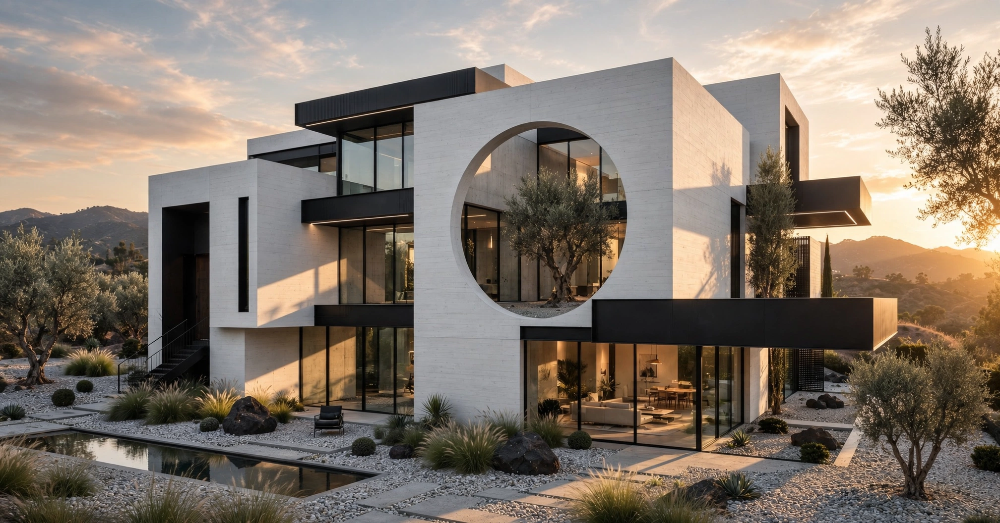
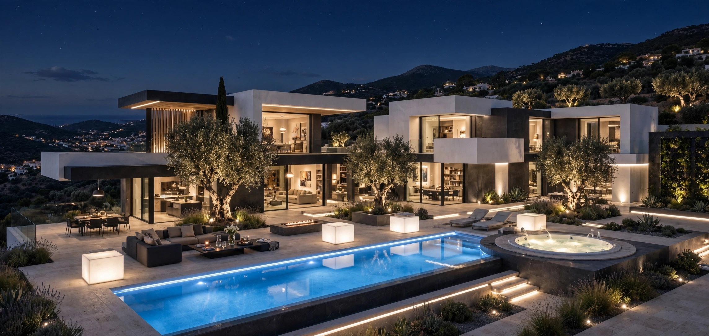

Architecture
A home is more than walls. Local materials, shifting daylight and a relationship with the garden all shape the spaces we inhabit. Explore ten illustrated architectural studies.
Geometric House — Day & Night
Both original interactive presentations are published intact, including their original illustrations.

Geometric House — Square, Rectangle, Circle
The complete original architectural concept, with its drawings, photographs and interactive presentation.
Open the original ↗
Geometric House — Night, All Lights On
An original night-lighting study with illuminated square, rectangular and circular forms.
Open the original ↗Explore the stories
Independent writing on nature, culture, travel and freedom.

Cotswold Stone House
A 95 m² cottage designed around local stone, texture and the garden.

Wisteria House: Room-by-Room Tour
Living rooms, kitchen, bedrooms and outdoor spaces.

Wisteria Log House
A timber-led home inspired by traditional rural living.

Model No. 03 — Wisteria
A characterful design with natural materials and a garden setting.

Model No. 04 — Kara
An A-frame concept balancing bold form and rural warmth.

Wisteria Village House Collection
An architectural collection of complementary village homes.

Stone House: Interior Architecture
A detailed interior design study using stone and timber.

Stone House: Night Lighting
How architectural lighting transforms stone and outdoor space.

85 m² Natural Materials Home
A small home designed around natural materials and everyday life.

85 m² Natural Home at Night
An evening study of light, texture and the building’s surroundings.
Patika’s English edition is growing. Where a full translation is not yet available, the link opens the original Turkish article, clearly marked above.